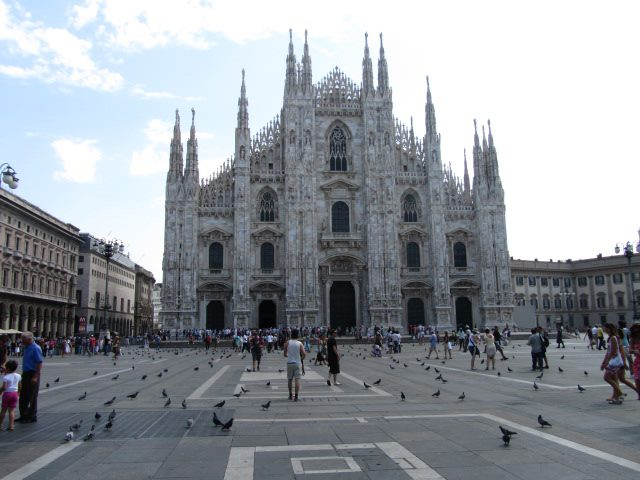
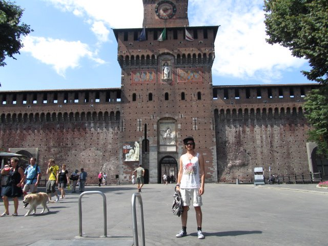
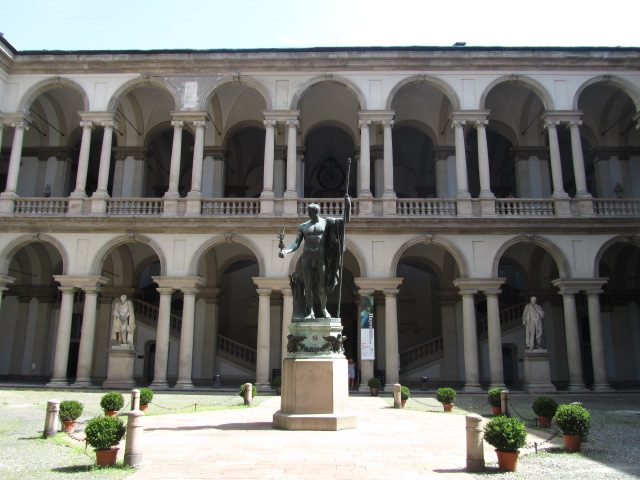
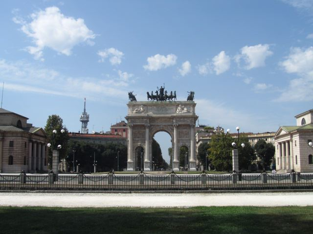

Milan Voyage: A 4-Day Cultural Adventure
Introduction
Milan, Italy's fashion capital, is renowned for its stunning architecture, rich history, and vibrant cultural scene. The city seamlessly blends historical landmarks with modern advancements, making it a must-visit destination for travelers seeking both tradition and contemporary experiences.
A Brief History of Milan: Founded as a Celtic settlement, Milan became a major center during the Roman Empire. Throughout the centuries, it has been a focal point for art, commerce, and politics in Italy. Today, Milan stands as a testament to Italy's diverse heritage, offering a unique blend of past and present.
Day 1: Arrival and Historical Exploration
Upon arriving at Milan Malpensa Airport, I took a taxi to my hotel located in the heart of the city. The first day was dedicated to exploring Milan's rich historical landmarks.
Wandering through the bustling streets, I marveled at the magnificent Milan Cathedral. The intricate Gothic architecture is truly awe-inspiring. A visit to the Galleria Vittorio Emanuele II offered a glimpse into Milan's elegant shopping scene, with its glass-domed arcade and upscale boutiques. In the evening, I enjoyed a delightful dinner at a traditional Italian restaurant, savoring dishes like risotto alla Milanese and ossobuco.
Day 2: Art, Fashion, and Modern Architecture
The second day was all about immersing myself in Milan's artistic and fashion-forward culture.
I started the day with a visit to Sforza Castle, exploring its impressive museums and beautiful courtyards. The afternoon was spent in the Brera district, where I visited the Brera Art Gallery, home to an extensive collection of Renaissance masterpieces. Later, I wandered through the Quadrilatero d'Oro, Milan's prestigious fashion district, admiring the latest trends and luxury brands. The day concluded with a visit to the modern Porta Nuova district, marveling at its innovative skyscrapers and contemporary design.
Day 3: Culinary Delights and Cultural Immersion
On the third day, I delved into Milan's culinary scene and engaged in cultural activities.
A visit to Santa Maria delle Grazie allowed me to witness Leonardo da Vinci's iconic masterpiece, "The Last Supper". Booking tickets in advance was essential to secure a viewing slot. In the afternoon, I participated in a traditional Italian cooking class, learning to prepare classic dishes like homemade pasta and tiramisu. The evening was spent attending a performance at La Scala Opera House, experiencing Milan's renowned performing arts scene.
Day 4: Shopping, Relaxation, and Farewell
On my final day, I enjoyed a mix of shopping, relaxation, and leisurely exploration before bidding farewell to Milan.

I began the morning with some last-minute shopping in the trendy Navigli district, known for its charming canals and eclectic boutiques. The afternoon was dedicated to a relaxing stroll through Parco Sempione, enjoying the greenery and peaceful atmosphere. I also took some time to visit the Modern Art Gallery (GAM), appreciating contemporary artworks and exhibitions. The trip concluded with a farewell dinner at a rooftop restaurant, offering stunning views of Milan's skyline.
Highlights
- Milan Cathedral (Duomo di Milano): Iconic Gothic cathedral at the city's heart.
- Galleria Vittorio Emanuele II: Historic shopping arcade with luxury boutiques.
- Sforza Castle: Majestic fortress housing several museums.
- Brera Art Gallery: Home to an impressive collection of Renaissance art.
- Quadrilatero d'Oro: Prestigious fashion district featuring high-end brands.
- Porta Nuova District: Modern area with innovative architecture.
- Santa Maria delle Grazie: Location of Leonardo da Vinci's "The Last Supper".
- La Scala Opera House: Renowned venue for world-class performances.
- Navigli District: Vibrant area known for its canals and eclectic shops.
- Modern Art Gallery (GAM): Hub for contemporary art exhibitions.
Practical Information
Transportation
Milan is accessible by air via Malpensa Airport and Linate Airport, with regular flights from major European cities. Within the city, public transportation includes buses, trams, and the metro system operated by ATM. Renting a bike or using ride-sharing services are also convenient options. The city center is pedestrian-friendly, making it ideal for exploring on foot.
Accommodation
Milan offers a wide range of accommodations, from luxury hotels in the fashion district to budget-friendly hostels near major attractions. I stayed at a mid-range hotel in the Brera district, which provided excellent amenities and easy access to key sights.
Budgeting
Milan is moderately priced compared to other European capitals. A comfortable daily budget ranges from €60 to €200, covering accommodation, meals, transportation, and activities.
Tips and Recommendations
Do’s and Don’ts
- Do: Book tickets to popular attractions like "The Last Supper" and La Scala in advance.
- Don’t: Litter or disturb public spaces; help preserve Milan's cleanliness and beauty.
- Do: Wear comfortable footwear for extensive walking and exploring.
- Don’t: Engage in unsafe activities without proper guidance and equipment.
- Do: Carry a refillable water bottle; public drinking fountains are available throughout the city.
- Don’t: Skip validating your public transport tickets; fines are issued for non-validated tickets.
- Do: Respect local customs and traditions; observe proper etiquette when interacting with locals.
- Don’t: Jump queues; always wait your turn at popular attractions.
- Do: Use sunscreen and wear a hat, especially during summer months.
- Don’t: Forget to learn a few basic Italian phrases to enhance your interactions.
Packing List
- Comfortable walking shoes
- Fashionable outfits for shopping
- Camera or smartphone for photos
- Guidebook or map of Milan
- Travel adapter (Type F socket)
- Reusable water bottle
- Personal medications
- Umbrella or raincoat
- Light jacket for evenings
- Basic Italian phrases
Local Etiquette
Respect the local community and their cultural practices. Always greet with a friendly smile and a polite gesture. Dress appropriately when visiting religious and historical sites. When interacting with locals, use polite language and be mindful of cultural norms.
Cultural Immersion
Engaging with local Milanese residents provided a deeper understanding of the city's cultural heritage and daily life. I participated in a traditional Italian cooking class, learning to prepare authentic dishes like risotto and tiramisu, and experienced the rich flavors of Milan's cuisine firsthand.
Visiting local markets and attending cultural events offered insights into Milan's artistic and cultural evolution, fostering a greater appreciation for the city's dynamic spirit and enduring traditions.
Food and Cuisine
Milan's culinary scene is a delightful blend of traditional Italian flavors, modern gastronomy, and international influences.
- Risotto alla Milanese: A luxurious saffron-infused risotto that originated in Milan during the 16th century.
- Ossobuco: Braised veal shanks cooked with vegetables, white wine, and broth, typically served with risotto.
- Pizzoccheri: Buckwheat pasta dishes from the Lombardy region, often served with vegetables and cheese.
- Panettone: Sweet bread loaf enjoyed during Christmas, filled with candied fruits and raisins.
- Gorgonzola: Creamy blue cheese named after the town of Gorgonzola near Milan.
- Polenta: Cornmeal dish served as a side or base for various toppings.
- Local Wines: A selection of Lombardy wines, including Franciacorta and Valtellina.
- Tiramisu: Beloved Italian dessert made with layers of coffee-soaked ladyfingers and mascarpone cheese.
- Espresso: Strong Italian coffee enjoyed throughout the day at local cafes.
- Gelato: Artisan Italian ice cream available in numerous creative flavors.
I highly recommend dining at a traditional Milanese trattoria, where you can savor authentic dishes while enjoying the charming ambiance of local eateries.
Adventure and Activities
Milan offers a variety of activities for adventure enthusiasts and those seeking unique experiences:
- Guided City Tours: Explore Milan's historical and cultural landmarks with expert guides.
- Fashion Workshops: Participate in fashion design and styling workshops to immerse yourself in Milan's fashion scene.
- Boat Tours on Navigli Canals: Enjoy scenic boat rides along Milan's historic canals, offering unique perspectives of the city.
- Shopping: Visit popular shopping districts like Quadrilatero d'Oro and Corso Buenos Aires for a diverse retail experience.
- Nightlife: Experience Milan's vibrant nightlife with numerous bars, clubs, and live music venues.
- Photography Tours: Capture Milan's architectural beauty and lively streets with guided photography sessions.
- Local Markets: Explore bustling markets like Mercato di Via Fauche and Mercato Comunale for fresh produce and traditional crafts.
- Art Workshops: Participate in art classes and workshops to engage with Milan's creative community.
- Hiking in Nearby Lakes: Discover nearby natural reserves and hiking trails around Lake Como and Lake Garda.
- Cooking Classes: Learn to prepare traditional Italian dishes with local chefs in hands-on cooking workshops.
One of the most thrilling activities was taking a guided bike tour through Milan's green spaces and along the Navigli canals, offering a perfect blend of urban exploration and natural beauty.
Personal Stories
Meeting Sofia, a local artist, was a highlight of my trip. She took me to her studio, where I witnessed her creative process and learned about Milan's thriving art community. Her passion for art and dedication to her craft provided a deeper appreciation for the city's artistic landscape.
Another unforgettable moment was attending a traditional Italian opera performance at La Scala, where I experienced the powerful vocals and dramatic performances that embody Italy's rich cultural heritage.
Conclusion
Milan is a captivating destination that offers a perfect blend of history, culture, and modernity. My 4-day journey was an enriching and exhilarating experience, uncovering the dynamic spirit and enduring traditions of one of Europe's most vibrant capitals.
If you're planning a trip to Italy, Milan should definitely be on your list. Whether you're seeking historical insights, cultural experiences, or simply a vibrant urban adventure, Milan has something for everyone.
Until next time, happy travels!
Visitor Testimonials
"Milan is a fashion lover's paradise. The Duomo is breathtaking, and the shopping in the Quadrilatero d'Oro is unparalleled. The city's blend of old and new makes every day an adventure."
"Exploring Milan's art galleries and historic sites was an unforgettable experience. The local cuisine was absolutely delicious, and the people were incredibly welcoming. Highly recommend visiting!"
Follow My Adventures
Stay connected and follow my journey through the links below: